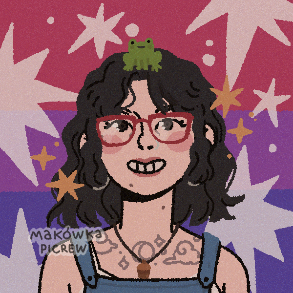

Sofia Barrantes

Professional profile:
Electrical Engineer with experience in software development and enterprise application support.
Skilled in Azure, CI/CD (Azure DevOps, GitHub Actions), and programming.
Strong background in electronics and lab tools.
Highly motivated, eager to learn, improve, and contribute in collaborative environments.
Experience:
DevOps Support - P&G
July 2024 - Present
- Provided operational and development support for transportation applications in Azure Cloud, using Python, SQL, and database management.
- Implemented CI/CD pipelines (Azure DevOps, GitHub Actions), including SonarQube code quality checks.
- Collaborate with cross-functional global teams under Agile frameworks.
- Implement automated validations and monitoring for data pipelines, ensuring software reliability and maintainability.
- Process owner for Change Management, leading CAB Reviews and ensuring process compliance as per ITIL standards.
Microprocessors Course Assistant - UCR
Feb 2024 - July 2024
- Supported students in developing hardware/software integrations (state machines, timing modules, GPIO, and interrupt handling, peripheral integration: ADC, SPI, I2C, SCI) for 68HCS12 microcontroller family, using the Dragon12 training board.
Electromagnetism I Course Assistant - UCR
July 2023 - Dec 2023
- Responsible for conducting practical sessions. Actively participated in setting up laboratory experiments utilizing advanced equipment such as OTDR, Interferometers, Radiometers, Oscilloscopes, and more.
Education:
Bachelor’s Degree in Electrical Engineering - UCR
Feb 2020 - Nov 2024
Licentiate’s Degree in Electrical Engineering - UCR
March 2025 - Present
Certifications:
- AZ-900: Microsoft Azure Fundamentals, 2024
- DevOps Foundations, 2024
- ITIL Foundations, 2025
- SQL Fundamentals Course (UCR), 2025
Skills:
Programming: Python - SQL - Assembly (Proficient), C - C# - Verilog - YAML (Basic)
Tools & Platforms: VS Code, GitHub, Azure, Databricks, SonarQube, Jira, MATLAB, Simulink, PSpice, PLECS, AutoCAD, Excel
Software Practices: CI/CD, Agile (Scrum/Kanban), Unit Testing, Test Automation, Change Management
Languages: Native Spanish, Advanced English (B2+)
Soft Skills: Problem Solving, Teamwork, Adaptability, Technical Writing, Proactivity
Others: